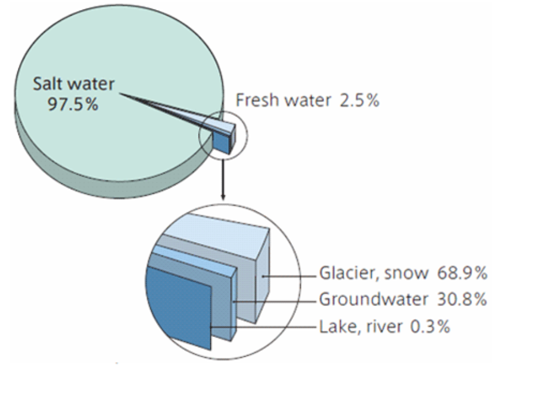
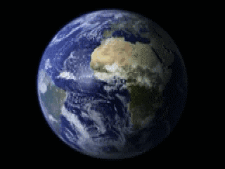

Earth
According to radiometric dating and other sources of evidence, Earth formed about 4.54 billion years ago. Earth's gravity interacts with other objects in space, especially the Sun and the Moon, Earth's only natural satellite. During one orbit around the Sun, Earth rotates about its axis over 365 times, thus an Earth year is about 365.26 days long. Earth's axis of rotation is tilted, producing seasonal variations on the planet's surface. The gravitational interaction between the Earth and Moon causes ocean tides, stabilizes the Earth's orientation on its axis, and gradually slows its rotation.
 Earth's lithosphere is divided into several rigid tectonic plates that migrate across the surface over periods of many millions of years. About 71% of Earth's surface is covered with water, mostly by its oceans. The remaining 29% is land consisting of continents and islands that together have many lakes, rivers and other sources of water that contribute to the hydrosphere. The majority of Earth's polar regions are covered in ice, including the Antarctic ice sheet and the sea ice of the Arctic ice pack. Earth's interior remains active with a solid iron inner core, a liquid outer core that generates the Earth's magnetic field, and a convecting mantle that drives plate tectonics.
Rotation
Earth's rotation is the rotation of the planet Earth around its own axis. The Earth rotates from the west towards east. As viewed from North Star or polestar Polaris, the Earth turns counter-clockwise.
The North Pole, also known as the Geographic North Pole or Terrestrial North Pole, is the point in the Northern Hemisphere where the Earth's axis of rotation meets its surface. This point is distinct from the Earth's North Magnetic Pole. The South Pole is the other point where the Earth's axis of rotation intersects its surface, in Antarctica.
The Earth rotates once in about 24 hours with respect to the sun and once every 23 hours, 56 minutes and 4 seconds with respect to the stars (see below). Earth's rotation is slowing slightly with time; thus, a day was shorter in the past. This is due to the tidal effects the Moon has on Earth's rotation. Atomic clocks show that a modern-day is longer by about 1.7 milliseconds than a century ago, slowly increasing the rate at which UTC is adjusted by leap seconds. Analysis of historical astronomical records shows a slowing trend of 2.3 milliseconds per century since the 8th century BCE.